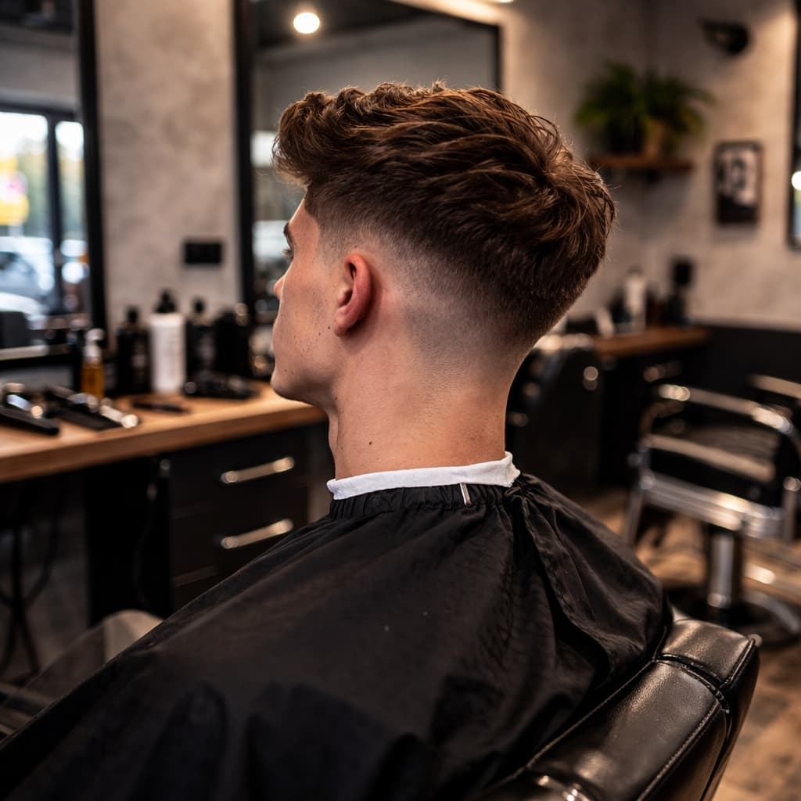
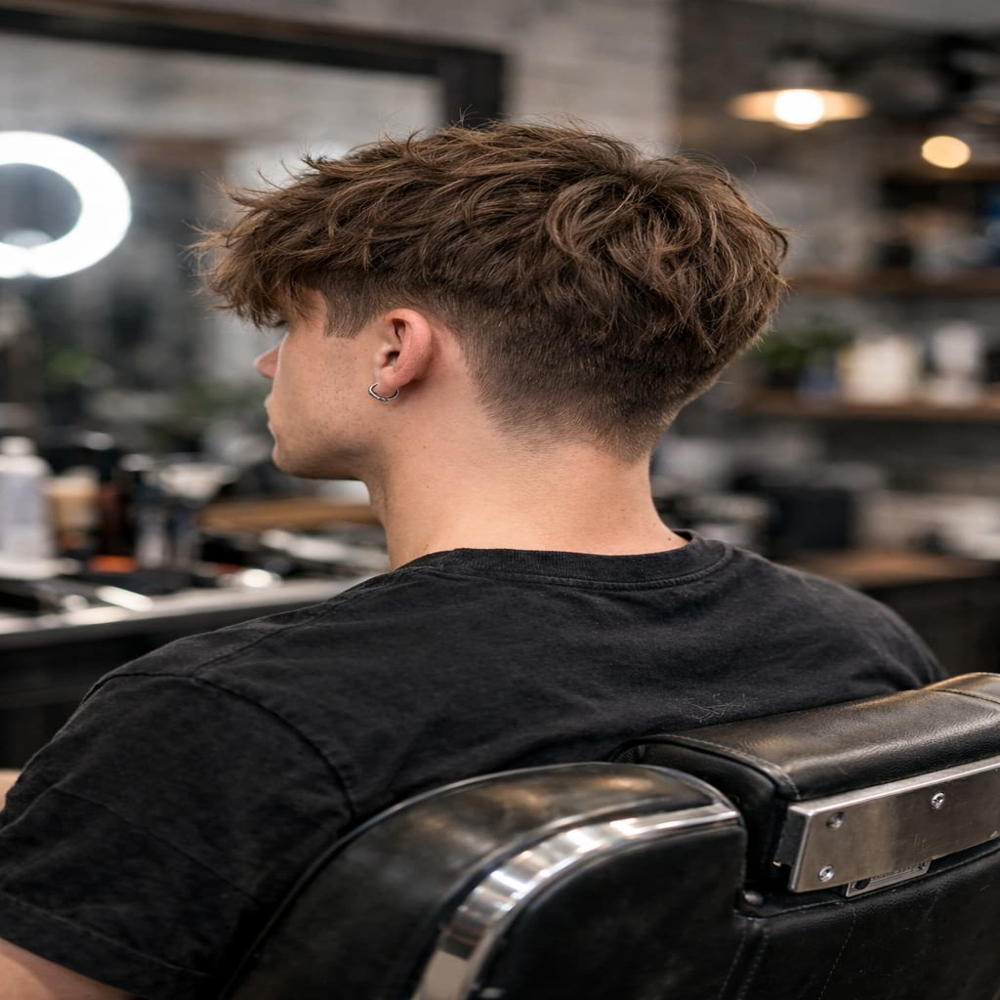
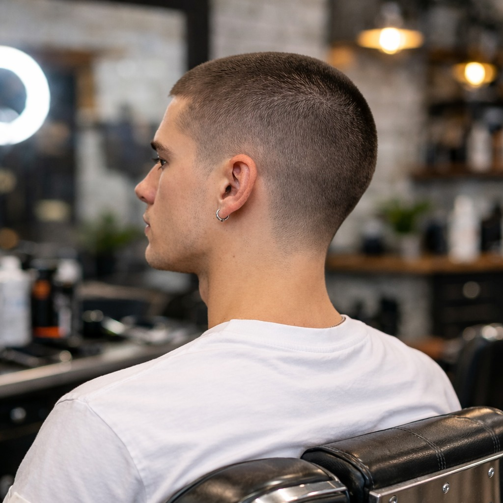

Fade
Sivujen ja niskan asteittain lyhenevä häivytys, joka luo puhtaan ja ammattimaisen lopputuloksen.
Lue lisää →Täältä löydät asiantuntijoidemme vinkit tyylikkääseen kampauksen hoitoon ja uusimpiin trendeihin.

Sivujen ja niskan asteittain lyhenevä häivytys, joka luo puhtaan ja ammattimaisen lopputuloksen.
Lue lisää →
Rennompi malli, jossa otsalle jätetään teksturoitu ja pidempi etuosa.
Lue lisää →
Rohkea ja voimakas leikkaus, jossa pituutta jätetään yläosaan ja sivut pidetään siistittyinä.
Lue lisää →
Lyhyt, tasainen koneleikkaus, joka on huoltovapaa ja selkeälinjainen.
Lue lisää →